Here's links to the previous parts: bot.html, bot2.html.
Some of the accounts mentioned on this page are not actually bots, but I have also been researching manually operated inauthentic accounts and accounts that are frequently reposted by bots, and sometimes for the sake of convenience I have referred to an account as a bot even though I haven't been completely sure if it's a bot or not.
This website has a list of the 200 accounts with the highest number of community notes: https://community-notes-leaderboard.com. I think the list was generated based on the data that is available from here: https://x.com/i/communitynotes/download-data.
In June 2024 when I retrieved the top 200 accounts, Concerned Citizen ranked first and illuminatibot ranked second. But accounts that are often reposted by bots but that still have a fairly low number of community notes included VigilantFox, DiedSuddenly_, JimFergusonUK, and CartlandDavid:
In June 2024 Reuters published a report about an anti-vaccine campaign on social media that initially targeted the Philippines but that later also extended to Central Asian and Middle Eastern countries. According to Reuters the campaign was focused on criticizing Sinovac vaccines and Chinese products like face masks and testing kits, and it ran from 2020 until 2021. The Reuters article said that the program was ran out of MacDill Air Force Base in Tampa: [https://www.reuters.com/investigates/special-report/usa-covid-propaganda/]
To implement the anti-vax campaign, the Defense Department overrode strong objections from top U.S. diplomats in Southeast Asia at the time, Reuters found. Sources involved in its planning and execution say the Pentagon, which ran the program through the military's psychological operations center in Tampa, Florida, disregarded the collateral impact that such propaganda may have on innocent Filipinos.
[...]
A senior U.S. military commander responsible for Southeast Asia, Special Operations Command Pacific General Jonathan Braga, pressed his bosses in Washington to fight back in the so-called information space, according to three former Pentagon officials.
The commander initially wanted to punch back at Beijing in Southeast Asia. The goal: to ensure the region understood the origin of COVID while promoting skepticism toward what were then still-untested vaccines offered by a country that they said had lied continually since the start of the pandemic.
A spokesperson for Special Operations Command declined to comment.
At least six senior State Department officials responsible for the region objected to this approach. A health crisis was the wrong time to instill fear or anger through a psychological operation, or psyop, they argued during Zoom calls with the Pentagon.
[...]
In spring 2020, special-ops commander Braga turned to a cadre of psychological-warfare soldiers and contractors in Tampa to counter Beijing's COVID efforts. Colleagues say Braga was a longtime advocate of increasing the use of propaganda operations in global competition. In trailers and squat buildings at a facility on Tampa's MacDill Air Force Base, U.S. military personnel and contractors would use anonymous accounts on X, Facebook and other social media to spread what became an anti-vax message. The facility remains the Pentagon's clandestine propaganda factory.
[...]
The Pentagon's audit concluded that the military's primary contractor handling the campaign, General Dynamics IT, had employed sloppy tradecraft, taking inadequate steps to hide the origin of the fake accounts, said a person with direct knowledge of the review. The review also found that military leaders didn't maintain enough control over its psyop contractors, the person said.
[...]
And in February, the contractor that worked on the anti-vax campaign - General Dynamics IT - won a $493 million contract. Its mission: to continue providing clandestine influence services for the military.
The undercover nurse Erin Marie Olszewski wrote that before she launched an anti-vaccine organization in 2019, she worked "in the antiterrorism units at MacDill Air Force Base in Tampa. Most of what happened there is stuff that I can't talk about. Even the fact that there is an antiterrorism unit there isn't known by many people." [https://books.google.com/books?id=Dn_rDwAAQBAJ&pg=PT91] The headquarters of the U.S. Special Operations Command are located at MacDill. Alex Jones has also said that some of his staff members have worked at MacDill or for Special Operations Command. [https://web.archive.org/web/20180523163150/https://alexjonesexposed.info/] In a talk in 2022, the undercover nurse Olszewski also said that she was "trained at the John F. Kennedy special warfare center in Fort Bragg in psychological operations and civil affairs". [https://gregwyatt.net/did-erin-malone-olszewski-work-undercover-at-hospitals-schools-and-orphanages-in-iraq/]
When I googled for "general dynamics it" psyops before:2024-6-1, I found that General Dynamics IT had posted job listings with titles like "Counter Intelligence Role Players", "Surveillance Role Player", and "Surveillance Team Role Player". [https://gangstalkingmindcontrolcults.com/more-job-ads-for-surveillance-role-players-counter-intelligence-role-players-etc/]
But in any case, the Reuters article seems like a kind of a limited hangout that downplayed the scope of the anti-vaccine campaign on social media, because it made it seem like the purpose of the campaign was to promote American vaccine brands over a Chinese brand, and that the campaign only targeted third world countries, and that the campaign was already over. But in reality it seems like there is a much broader anti-vaccine campaign on social media which is targeted against vaccines as a whole and not just Chinese vaccines, and the campaign is also targeted against a western audience, and it's still ongoing. Or there are probably several arms of the campaign, but maybe the arm that was targeted against the Philippines seemed innocuous enough that Reuters was allowed to write about it.
Added later: In August 2020 General Dynamics IT got a 9.45 million USD contract from CDC to manage VAERS over the next year, but by 2022 GDIT had received over 35 million USD to manage VAERS. Josh Guetzkow published a series of reports from GDIT to CDC received through FOIA. [https://researchrebel.substack.com/p/the-banality-of-vaers] Apparently GDIT was even responsible for managing low-level tasks at VAERS like filling in case information, because a report by GDIT said that they had insufficient resources to perform requirements like "data processing, telephone inquiries, clinical inquiries, etc.", and a later report said that they had hired over 200 additional staff to process reports. I also found a job listing posted by GDIT for a Spanish-speaking person to request missing information about VAERS reports over a phone. [https://clearedjobs.net/job/bilingual-health-information-customer-service-specialist-remote-opportunity-not-applicable-texas-933644]
John F. Kennedy Jr. is JFK's son who is supposed to have died in a plane crash according to official history, but QAnon followers believe that he is still alive and he will one day emerge from hiding and become Trump's vice president. I found dozens of these accounts that pretend to be JFK Jr.: [https://x.com/search?q=%22john+f.+kennedy+jr.%22&f=user]

When I searched for the text a tweet by one of the accounts in double quotes, the same text had been posted by 4 other JFK Jr. accounts, but it was also posted by an account that portrayed a fairly unknown Qtard YouTuber called Axel Vasa:

I think Axel Vasa's real account is called summmertc, but other accounts which portray him are called Summmertec, axeIvasa, summmertCe, SummmertC, WestWizard45, summmeritiC, axelvasa0001, ismeaxelvasa, axelvasa089, AxelVasa06, summmertCe, real_SummmmertC, V1362Axel, and SummmretC. They copy tweets by the real Axel Vasa so I found them by searching the text of his tweets in double quotes: [https://x.com/search?q=%22Take+That+Earthlings%2C+When+A+Pleiadean+Speaks.+I+Love+You%22&f=live, https://x.com/search?q=%22Two+Clones+Debating%2C%2C%2C%2C%2CCould+Be+Good%2C%2C%2C%2C%22&f=live]

I think the original JFK Jr. account was Real_JFK2024 which has now been suspended, so the other accounts could just be bots that copied the original account, in the same way that the different Axel Vasa accounts could be bots that are copying the real Axel Vasa.
Two of the JFK Jr. accounts posted this engagement farming question that had also been posted by several MAGA accounts and by a fake account that portrayed the Q guy Charlie Ward: [https://x.com/search?q=%22Do+you+believe+Barack+Obama+began+the+downfall+of+The+United+States%22&f=live]

Another similar engagement farming question was posted two different JFK Jr. accounts, but it was also posted by multiple fairly popular MAGA accounts with over 10,000 followers. It seems to have been originally posted by an account called DonaldTNews: [https://x.com/search?q=%22Do+you+agree+with+Donald+Trump+saying+all+CCP%22&f=live]

Almost all tweets by one of the JFK Jr. accounts were retweets of either Mike Lindell or Judy Mikovits. [https://x.com/ford_judit97989] It might be a coincidence, but Mikovits's Twitter account used to be ran by the Qtard Zach Vorhies who also booked her interviews with Qtard YouTubers like RedPill78 and Tracy Beanz. [http://web.archive.org/web/20200423204807/https://www.gofundme.com/f/help-me-amplify-pharma-whistleblower-judy-mikovits] Vorhies claimed that the day when he came out as a whistleblower on Project Veritas, he received a text message from Q which said that he had guardian angels watching over him. [https://www.neonrevolt.com/2019/09/04/the-google-whistleblowers-message-from-qanon-greatawakening/]
Out of all the accounts whose reposts I have scraped so far, this Chinese account had the highest number of reposts of Peter McCullough: https://x.com/FIQwkiqTlIeVRDm. Almost half of its most recent tweets were quote tweets of Peter McCullough, the McCullough Foundation, or Vigilant Fox.
It had retweeted or quote tweeted these accounts at least 5 times up to the point when the infinite scrolling stopped loading more tweets:
143 VigilantFox 82 P_McCulloughMD 53 CraigKellyPHON (Australian politician who is often reposted by bots) 35 hasper0604 (Chinese account that reposts Western accounts) 24 Pancho66196600 (Chinese Miles Guo account) 23 MakisMD (used to be on TWC's Canadian chief medical board) 21 bambkb (Kevin - We the People) 21 anxiaodong777 (Chinese anti-vaccine account posting Western content) 18 McCulloughFund (McCullough Foundation) 13 DrNoMask (DrRay; many recent tweets about McCullough) 10 No3Mos (Chinese Miles Guo account) 9 zhiwenjinx (Miles Guo account that posts in Chinese and Spanish) 8 MRobertsQLD (Australian politician who is often reposted by bots) 7 COVIDSelect (Select Subcommittee on the Coronavirus Pandemic) 6 panguqianxun (Chinese Miles Guo account) 6 TheChiefNerd (posts video clips similar to clips that are often reposted by bots) 6 SaiKate108 (Kat A; English-language account that is often reposted by bots) 6 JimFergusonUK (UK politician with a COVID-related podcast) 6 Japan_Emb_inCN (Embassy of Japan in China) 6 0rQdwNnLHRlPk9k (Chinese Miles Guo account) 5 _aussie17 (often posts English translations of videos in Asian languages) 5 VigilantNews 5 EZ2p8 (Chinese Miles Guo account)
The 10th highest-ranking user on the list above is DrNoMask, whose display name is DrRay. I wasn't familiar with him, but he seems to tweet on average about 1 to 2 videos of McCullough per day. [https://x.com/search?q=from%3Adrnomask+mccullough&f=live] Out of his four most recent Rumble videos, one was an advertisement for Foster Coulson's dating site Unjected and the other was an advertisement for the Z-STACK product which is sold by TWC: [https://rumble.com/user/DoctorRay]

In 2020 and 2021 the Chinese account that now promotes McCullough was constantly promoting Limeng Yan: [https://x.com/search?q=from%3AFIQwkiqTlIeVRDm+until%3A2021-3-1&f=live]

Limeng Yan's podcast is hosted by America Out Loud News, which also hosts the podcasts of 3 out of 5 people on TWC's chief medical board (who are Peter McCullough, Harvey Risch, and James Thorp). [https://www.americaoutloud.news/authors-and-hosts/, https://www.twc.health/pages/leadership]
At the top of IlluminatiCoin's Linktree page there's a link labeled "Operation Q": [https://linktr.ee/illuminaticoin]

The link goes to the page link-tube.com/OperationQ which mostly consists of links to a Q blog called humorousmathematics.com:

The newest post in the blog is dated November 2023 and the oldest post is from 2020, and many of the links on the link-tube page also go to old posts from 2020.
The about page of the blog features three staff members, who are founder Chris Deluge, co-founder Josh Alexandria, and managing editor Operation Q. Below Operation Q's name there is a link to the same link-tube.com page that was linked by IlluminatiCoin, so maybe Operation Q is one of the people who runs the IlluminatiCoin bots, or maybe there's a team of people that is hiding behind the moniker (which I suspect is the case with Vigilant Fox who is supposed to be the editor-in-chief of Vigilant News, even though the Humorous Mathematics blog seems like a small enough operation that it could be ran by even a single person and not three people, and Operation Q was also featured in some episodes of the Humorous Mathematics podcast along with the other two guys):

There were only 8 results when I googled for a combination of the names Chris Deluge and Josh Alexandria in double quotes, but half of the results were about episodes of the Humorous Mathematics podcast. The podcast used to be hosted at Anchor.fm and several other platforms, but it now seems to have been deleted from all platforms. [http://web.archive.org/web/20210328223249/https://anchor.fm/humorousmathematics] The description of the podcast said "Dallas based coincidence theorists, The Humorous Mathematicians, discuss current events and topics revolving around the current state of America, Qanon, child trafficking, the Deep State and other dark forces. WWG1WGA"
Episodes of the podcast have also been posted on archive.org but their audio files are now private. [https://archive.org/search?query=creator%3A%22Humorous+Mathematics%22] There's a total of 27 episodes of the podcast at archive.org, but I found only five episodes which featured a guest. One of the guests was the "former CIA Officer Brandon Blackburn". Another guest was someone called Vinctum from the Netherlands, who used to have a YouTube channel about Q but the old videos on his channel have now been deleted and it now just has videos of inspirational music with anime thumbnails. [http://web.archive.org/web/20200420162226/https://www.youtube.com/channel/UCBZ_FipjV1hrExi9uDWesGA] The three other guests were people called "Sophia Raw", "Witsup", and "Denton, Tx Local Hip Hop Artist and Community Activist, AV the Great". The only place where I still found episodes of the podcast was a YouTube channel that contained two episodes of the podcast, where in the other episode their guest was the former CIA officer. [https://www.youtube.com/watch?v=2aYhTBDTRK4]
Even though the IlluminatiCoin bots don't generally promote flat earth, Operation Q wrote a post for Humorous Mathematics titled "The Earth Is Flat & Stationary: Destroying The Freemasonic Luciferian Globalist 'Globe' Lie": [https://www.humorousmathematics.com/post/the-earth-is-flat-stationary-destroying-the-freemasonic-luciferian-globalist-globe-lie]

Another post by Operation Q is titled "The Illuminati Nazi World Order (NWO): Obama Is Hitler's Biological Grandson, A Khazar Rothschild". It includes a map of Nazi Antarctic bases on a flat earth, where there's Nazi bases all over the ice wall: [https://www.humorousmathematics.com/post/rothschildism-the-illuminati-nazi-world-order-nwo]
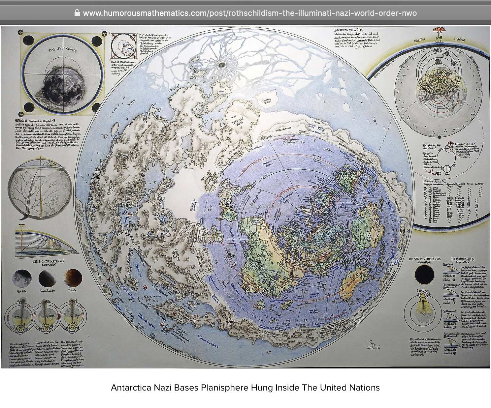
I searched for lang:ja limeng yan, which is likely to return tweets by bots because real Japanese people would normally write Limeng Yan's name with Chinese characters. Two of the newest tweets were posted by this bot called glorious_harmo that promotes QAnon and that tweets in a mixture of Japanese, Arabic, and English: [https://x.com/search?q=lang%3Aja+limeng+yan&f=live, https://x.com/glorious_harmo]

The pinned tweet of the bot includes an image that says "WHERE WE GO ONE, WE GO ALL" and that has the hashtags "#QAnon" and "#TheGreatAwakening". The same image is used by Arkmedic as his profile picture at Gab and his banner image at Twitter. Arkmedic is an old username of Jikkyleaks who used to be a QAnon follower (and I think he's from the UK but he lives in Australia, so it's weird that he would have an American flag in his banner image): [https://gab.com/arkmedic, https://x.com/arkmedic]

About a third of the most recent tweets by glorious_harmo were in Japanese, a third in Arabic, and a third in English:

The accounts that glorious_harmo had reposted the most often included CMDRVALTHOR, PapiTrumpo, BRICS News, ShadowofEzra, and Jack Straw:
131 marefat_1342 # Q account that posts in Arabic 85 MiuUniverse # Japanese account which had recent tweets about flat earth and Tartaria 69 zVAQGU7CmC90815 # Q account that posts in Japanese 35 IZUJIN2 # Japanese MAGA account 32 QQSource # English-language Q account 31 l42022425 # English-language Q account 27 glorious_harmo 26 miu_et496 19 buitengebieden 15 IN_THE_SHADQWS 13 Poripara3699 10 un4yRFGlfQRAIZD 8 diz8aOhYDk5dSJi 8 CMDRVALTHOR 7 PapiTrumpo 7 MasculineRetain 6 TraderGirlQ 6 Gt8VUlzRG7buafO 5 ryouzi_r 5 neospirituality 5 NewsDigestWeb 5 GoldTelegraph_ 5 GenFlynn 5 BRICSinfo # BRICS News 4 peponaaru 4 QTHESTORMM 3 rawsalerts 3 livelivelive42 3 komakom36885352 3 elonmusk 3 dragoneatash 3 VincentCrypt46 3 TrumpDailyPosts 3 ToshihikoUeno 3 TheEmmapreneur 3 ShadowofEzra 3 SabrinaGal182 3 Nancy023922191 3 JackStr42679640 3 GeneralMCNews
The glorious_harmo account has also posted tweets in many other languages (even though all 6 tweets shown below were part of threads which consisted of the same tweet translated to multiple different languages): [https://x.com/glorious_harmo/status/1742152127798288793, https://x.com/glorious_harmo/status/1741804560631664790]

The oldest tweet by the account was a Japanese translation of an article about Barry Young by Natural News. [https://x.com/search?q=from%3Aglorious_harmo%20until%3A2023-12-17&f=live, https://x.com/glorious_harmo/status/1735902717892231437] A reply to the tweet also included an Arabic translation of the same article:

In August 2024 several MAGA accounts posted variations of the tweet shown below. The first account I found which posted a tweet with the formula was called "Marjorie Taylor Greene Press Release (Parody)", and the second account was called "Kimala Harrimuff":

Most accounts which posted the tweet were pro-Trump accounts. But a similar tweet was also posted by a pro-Kamala account called kamala_wins47:

kamala_wins47 has also posted other tweets that followed a similar formula as tweets by MAGA accounts:

kamala_wins47 ends many of its tweets with the phrase "It sure would be a shame if everyone shared this and it went VIRAL!" The same phrase has been used by the MAGA influencer Bo Loudon and by many MAGA accounts that have copied tweets from Bo Loudon: https://x.com/search?q=%22It+sure+would+be+a+shame+if+everyone+shared+this+and+it+went+VIRAL!%22&f=live. At first I thought that kamala_wins47 might have been part of a botnet which also included pro-Trump accounts, and the phrase was part of some kind of a template that was used by multiple bots. But in each case I checked, the MAGA accounts which used the phrase had copied their tweets from Bo Loudon. Bo Loudon was also the earliest account I found which used the phrase. So it could be that kamala_wins47 simply copied the phrase manually from Bo Loudon:

Many tweets by Bo Loudon also end with the phrase "Kamala definitely wouldn't want you to share this!" The same phrase was also used multiple times by a MAGA account called Carter Hughes which has over 200,000 followers: https://x.com/search?q=%22Kamala+definitely+wouldn%27t+want+you+to+share+this%21%22&f=live. Several other accounts had also used the same phrase, but in each case I checked their tweets were copied from either Bo Loudon or Carter Hughes. The tweets by Carter Hughes always started with the word "BREAKING:" but the tweets by Bo Loudon always started with an alert sign emoji. Sometimes a similar tweet was posted by both accounts, so at first I thought either of them might have always copied the tweets from the other one in case the other one always posted the tweets first, but there were some tweets which were only posted by Bo Loudon and other tweets that were only posted by Carter Hughes. However it doesn't necessarily mean that the tweets were automated, because it might for example be that Bo Loudon and Carter Hughes had the same social media manager:

An account called Jen_trump copied a tweet from Bo Loudon and it also retweeted many tweets by Bo Loudon:

Jen_trump posted a tweet which said "Attention everyone! I'm a trump supporting independent woman but nobody see my posts", and it retweeted another account which posted a similar tweet: [https://x.com/x_graziana2]

I also found 18 other Trump-supporting independent women whose posts were seen by nobody. [https://x.com/search?q=%22Attention+everyone%21+I%27m+a+trump+supporting+independent+woman+but%22&f=live]
Conspirador Norteño pointed out that kamala_wins47 posted many links to a shop that sells t-shirts, and it posted tweets which featured the phrases "This video was deleted from Twitter" and "You know what to do", but another account which had earlier followed a similar formula was called Emywinst: [https://x.com/conspirator0/status/1825916257645858992]

When I searched for a combination of the two phrases on Twitter, there were many other accounts which had also used the phrases, even though their tweets seem to have been generally copied from either Emywinst or kamala_wins47. [https://x.com/search?q=%22this+video+was+deleted+from+twitter%22+%22you+know+what+to+do%22&f=live]
kamala_wins47 posted a screenshot of the profile of Emywinst and said "That's me", even though the tweet has now been deleted: [https://x.com/ushadrons/status/1826252203180581039/photo/2]

An account called Kamala_tim_wins seems to operate with a similar formula as kamala_wins47, and it posts links to the same t-shirt store. Kamala_tim_wins used to be called wins_trump47 until August 6th 2024 UTC, but it has now deleted all of its tweets that were posted before it changed its name. [https://x.com/search?q=%40wins_trump47&f=live, https://memory.lol/app/tw/Kamala_tim_wins] However after the account had already changed its name, it seems to have accidentally posted this anti-Kamala tweet that was copied from Joey Mannarino: [https://x.com/Kamala_tim_wins/status/1821364252696866878, https://archive.is/k5ERy]

In July 2024 Steve Kirsch had a subretinal hemorrhage so he is now probably permanently blind in one eye. Many of his followers were saying that he went blind because he got the COVID shots. But ironically he may have actually gone blind because he took Peter McCullough's supplements, which is still not widely known. He seems to have kept it mostly under the wraps, but I only heard him mention it in passing during one of his VSRF videos in August 2024. [https://rumble.com/v5av9p9-vsrf-live-139-first-responder-whistleblowers.html] Maybe he hasn't mentioned it elsewhere if he doesn't want to throw McCullough under the bus. But anyway in the VSRF video Kirsch said: "This thing happened to me. And I'll let people know to be careful, to be careful about anything you put into your body. I don't care if it's a vaccine or a supplement or a drug. Make sure you really understand the interactions. And make sure that all of your specialists know what you're taking, so that you can look for things that are probably not going to provide you any benefit whatsoever, and would only contribute downside risk. Because I think that the - I was on the Peter McCullough protocol, which I think is a great protocol, I mean it's highly highly effective for preventing blood clots, and for eliminating any blood clots that you might have. It turned out that wasn't my problem. Because I was just taking it thinking that, you know there was no harm in taking it. But because I had a retinal condition and because for whatever reason my doctor didn't realize that I was taking these three supplements, my retinal bleed was the mother of all retinal bleeds. And the first thing that happened when I ran into my - the first surgeon that I saw, he said 'what blood thinners are you on?' And I said I'm not on any blood thinners but I think I know what you're talking about." [https://rumble.com/v5av9p9-vsrf-live-139-first-responder-whistleblowers.html, time 41:10]
Kirsch said he was taking three supplements, so it probably meant McCullough's Spike Detox protocol because it consists of three supplements which are nattokinase, bromelain, and curcumin. They all have anticoagulant properties. The paper where McCullough described his protocol said this about nattokinase: "Because of the risk of bleeding, patients must be strongly cautioned to seek medical supervision with combining this nutraceutical with concurrent antiplatelet and anticoagulant drugs." [https://www.jpands.org/vol28no3/mccullough.pdf] And the paper also this about curcumin: "Patients should be counseled and monitored for bleeding complications including easy bruising, nasal mucosal bleeding, and gastrointestinal hemorrhage." And the conclusion of the paper also said: "Patients need close monitoring because of anticoagulant effects."
While I have been researching Twitter bots I have noticed that a large number of accounts have promoted McCullough's Spike Detox supplements and other products sold by The Wellness Company.
For example here thehealthb0t posted an advertisement for the Spike Detox protocol, which was retweeted by the bot Ellenng2013 which posts in Chinese:

An account called Sky_Raelian which promotes Raelianism has 840 tweets but they're all retweets. I'm not absolutely sure if it's a bot but it seems to repost a similar set of accounts that are reposted by bots that promote Raelianism. However here Sky_Raelian retweeted a video by Thekeksociety where McCullough advertised the Spike Detox product:

A user called linman1 had 2,779 tweets but almost all of them were retweets. There were only 11 non-retweet tweets returned by Twitter's search, but one of them was an advertisement for McCullough's Spike Detox protocol and another tweet was a reply to an Elon Musk fan account: [https://x.com/search?q=from%3Alinman1&f=live]

An identical tweet which promoted Spike Detox was also posted by an account called unitedweare11: [https://x.com/search?q=%22dr+mccullough%27s+vax+spike+protein+detox+protocol%22&f=live]

linman1 also retweeted this tweet by TWC which advertised Spike Detox:

When I scraped the reposts of linman1 up to the point when the infinite scrolling stopped loading more tweets, it had the most reposts for William Makis who was on TWC Canada's chief medical board, and Vigilant Fox ranked 4th:
42 MakisMD 25 its_The_Dr 25 BehizyTweets 20 VigilantFox 19 iluminatibot 18 DefiyantlyFree 14 WallStreetApes 13 JDunlap1974 13 GuntherEagleman 13 ChuckCallesto 11 LauraLoomer 10 nicksortor 10 myhiddenvalue 10 atensnut 10 TheEXECUTlONER_ 10 Real_RobN 10 BoLoudon 8 janninereid1 8 MichelleRM68 8 MdBreathe 8 MattWallace888 8 MTGrepp 8 DiedSuddenly_ 7 stkirsch 7 elonmusk 7 TONYxTWO 6 liz_churchill10 6 catturd2 6 WallStreetSilv 6 RickyDoggin 6 ImMeme0 6 DC_Draino
A user called Paul Kikos said that this clip of a speech by RFK Jr. was urgent as if it would've been a recent video: [https://x.com/PKikos/status/1831976683865583847]

However the video was almost 3 years old because it was from the Defeat the Mandates rally in January 2022. [https://childrenshealthdefense.org/defender/rfk-jr-speech-defeat-the-mandates/]
I think the avatar of Paul Kikos was probably generated by AI, even though I'm not completely sure:

Paul Kikos also has a LinkedIn profile which uses the same picture. It doesn't have any education listed and the only job he has listed is that he worked for a year at a mineral exploration company in 2012 to 2013: [https://www.linkedin.com/in/paul-kikos-614a5021/]

For some reason the description under his name still says "Field Technician @ Rum Jungle Resources (now called Verdant Resources)" even though presumably his profile would've been updated after he stopped working at the company in 2013. But I didn't find any more information by googling for a combination of his name and the name of the company in double quotes.
Paul Kikos said that a Substack post by someone called Stephen Reason was "my latest Substack piece". However Stephen Reason only posted a similar tweet where he linked to his Substack about 23 minutes later:

Paul Kikos seems to have copied many tweets from Telegram, so at first I thought he might have also copied Stephen Reason's post from Telegram. However when I searched for the text of another tweet by Stephen Reason in double quotes, it had also been posted by another user before it was posted by Stephen Reason, and the other user said it was "my article": [https://x.com/search?q=%22My+article+on+Australia%27s+proposed+National+Digital+ID+was+published+in+The+Light+Australia%22&f=live]

In the case of both pairs of tweets shown above, the tweet by Stephen Reason had slight differences to the tweet posted by the other user. So if the other user manually edited the tweet after copying it from Stephen Reason, why did the other user keep the text which said it was "My article" or "My latest Substack piece"?
However some users have a practice of retweeting their own tweets again after about a day from the original tweet, and other users post a new copy of the tweet instead and delete the original tweet. So it's possible that Stephen Reason might have similarly deleted his original tweets to his Substack articles and posted new tweets with slightly altered text, but the other accounts copied the original tweets.
In the video clip that was posted by the accounts shown below, John Bell who was one of the developers of the AstraZeneca vaccine said: "These vaccines are unlikely to completely sterilize a population. They're very likely to have an effect which works in a percentage - say 60 or 70%." He was talking about sterilizing immunity which means that viral replication is completely prevented by the immune response, as opposed to protective immunity where the replication is reduced but not eliminated completely. The original video was from August 2020. [https://www.youtube.com/watch?v=9y1TaIqy91Y&t=186s]
The video clip was posted 3 times by John O'Looney who said that Bell was talking about sterilizing people. It was also posted by Jim Ferguson, James Thorp, Sudden And Unexpected, Shadow of Ezra, Sophia Dahl, and by many accounts that promote Miles Guo. James Thorp who is on TWC's chief medical board said that "A 60 to 70% risk of infertility is certainly consistent with many experts observations." Some accounts that normally tweet in English posted versions of the video with Chinese or Spanish subtitles:

Sean Adl-Tabatabai also tweeted a video about the story. When I searched for a part of text of his tweet in double quotes, the first user who had posted the same text was an account whose pinned tweet was about Miles Guo. Its location was set as Spain, but it posted in a mixture of English and Chinese and it only had a couple of tweets in Spanish:

In August 2024 The People's Voice published an article about a paper where Young Mi Lee and Daniel Broudy claimed that they found "bio-nano-robot like" structures in COVID vaccines. The article was titled "Japan Declares State of Emergency After 'Nanobots' Found in 96 Million Citizens", even though the main text of the article didn't mention anything about Japan declaring a state of emergency or nanobots being found in 96 million citizens, and neither was even mentioned in the original paper. [https://thepeoplesvoice.tv/japans-declares-state-of-emergency-after-nanobots-found-in-96-million-citizens/]
Two of the earliest accounts that tweeted about the TPV article seemed like they had an AI-generated avatar. [https://x.com/search?q=96%20million%20nanobots%20until%3A2024-8-11&f=live, https://x.com/JA_strategist/status/1822367446835007495, https://x.com/SteabhanMacGR/status/1822381572928180567] One of the accounts portrayed a black man from Ghana who for some reason was posting about American political topics. The ear and shoulder on the left side of his avatar image are blurred even though the front of his face and the curtain on the background are not blurred, so the image looks like it has some kind of an artificial blur effect and not a real blur produced by the lens of a camera (but similar patterns of blur seem to be common in AI-generated 3D portrait images). The avatar of the white man is even more clearly fake, and the tufts of hair on the left side of the photo are also blurred:


The user Camus posted a tweet where it claimed that vaccinated children in ages 10 to 14 had about 45 times higher all-cause mortality than unvaccinated children, even though actually it was only children in the group "Third dose or booster, at least 21 days ago" who made up only about 0.5% of the total person-years of vaccinated people. [https://x.com/newstart_2024/status/1834270020270260262] In the comments of the tweet I saw a user called DeborahGinn10 whose avatar appeared to be AI-generated, but it also has a pattern of blur where the hair and ears are blurred, and even the neck is heavily blurred:


The verified followers of DeborahGinn10 included a MAGA account called Jack Menshaw. When I googled for the name Jack Menshaw in double quotes, there were only 4 results which were all about the Twitter account. His avatar appears to be AI-generated, and for example the hair and the shoulder on the left side of the photo are blurred (and often in these photos the hair looks like it's somehow too rigid or it's not flowing freely enough):


Added later: The username of JA_strategist has now been changed to ActivistJerry. Many of its newest tweets promoted Elon Musk:
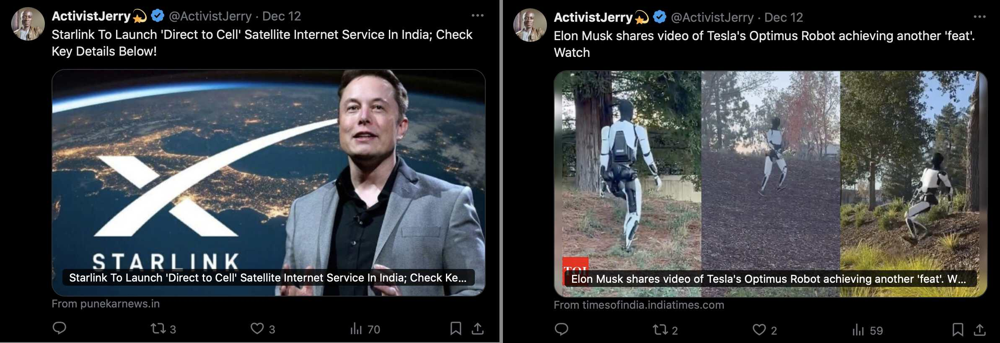
This tweet by illuminatibot received over 2 million views: [https://x.com/iluminatibot/status/1838545168061911143]
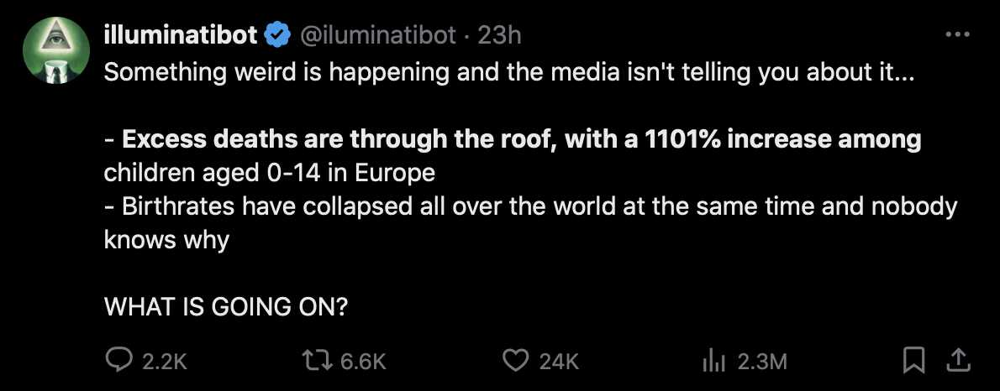
The story about the 1101% increase seems to have come from a Substack post by Peter Sweden from 2022. [https://www.petersweden.org/p/excess-mortality-rate] The post is behind a paywall, but I believe Peter Sweden derived the figure using similar methodology as was described in this answer at Stack Exchange: [https://skeptics.stackexchange.com/questions/53765/has-there-been-a-1101-increase-in-excess-deaths-among-children-aged-0-14-across]
You can DL the dataset from EuroMOMO and do the simple arithmetic yourself. (Sorry no direct link to the dataset seems possible; they use some AJAX or stuff like that.) It's not 100% clear what formula the blog claims uses, or the exact period involved, but one thing it states is "compared with the same time period in 2021".
So let's look at a few periods; for 2021, the cumulative excess ("observed count" minus "baseline", summed from first week of the year) is actually negative for the first half of the year (i.e. below long-term baseline) and only crosses zero in the 2nd half of that year, so for 2021 you get excess numbers (in the 0-14 age group) like
- First 34 weeks: 80.98
- First 30 weeks: 23.82
- First 29 weeks: -13.12
The corresponding excess numbers for 2022, all well above the baseline
- First 34 weeks: 855.67
- First 30 weeks: 787.32
- First 29 weeks: 742.06
So, using the (b-a)/a x 100 percentage increase formula one can make various claims about the excess like:
- 957% increase for the first 34 weeks
- 3,205% increase for the first 30 weeks
- -5,756% increase for the first 29 weeks
Tweets about the 1101% increase had been posted dozens of times by different IlluminatiCoin bots since 2023. Similar tweets have also been posted many times by accounts called Quelle33_ and source_222 which portray accounts of real people: [https://x.com/search?q=%22Excess+deaths+are+through+the+roof%2C+with+a+1101%25+increase+among%22&f=live]
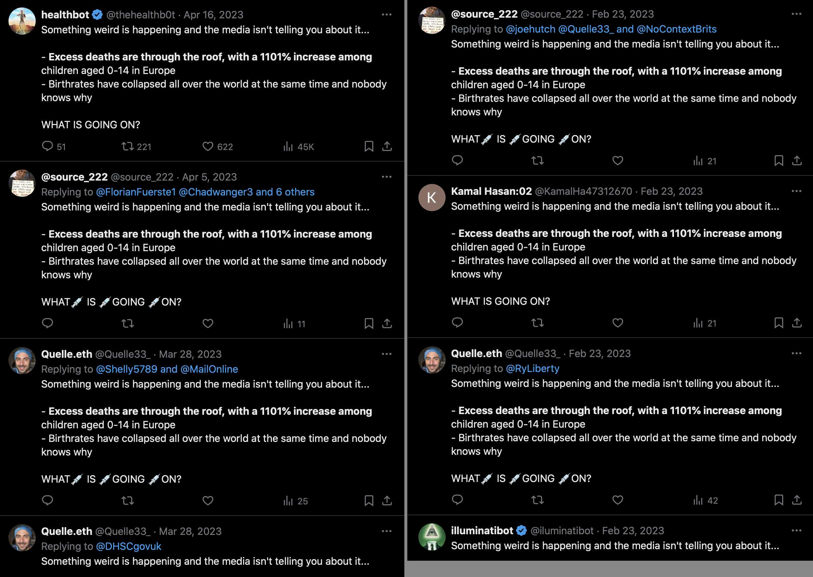
The tweet about excess deaths was also posted by multiple accounts which portrayed black people:
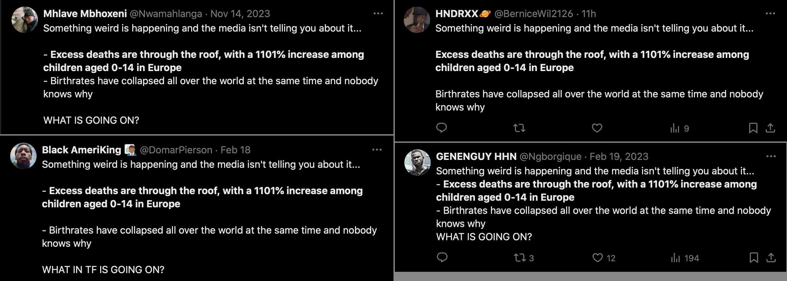
One of the black accounts was called DomarPierson, but there were zero hits when I googled for the name "Domar Pierson" in double quotes. The account seems to have an AI-generated profile picture:


The tweet shown below was the oldest tweet by Quelle33_ that was returned by Twitter's search, but when I searched for a part of the text of the tweet in double quotes, there were 27 results which consisted of 21 tweets by source_222, 5 tweets by Quelle33_, and one tweet by an account called Abdullah_Om3r03: [https://x.com/search?q=%22In+1948%2C+Israeli+soldiers+destroyed+530+Palestinian+towns%2C+massacred+Palestinians+and+drove+75%25+of+the+native+population%22&f=live]
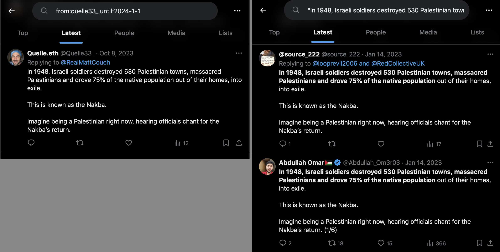
The avatar of Quelle33_ looks like it was generated with thispersondoesnotexist.com. When I compared it to the avatars of German users called tom_zeh and SoniaMarima whose avatars also look like they were generated by thispersondoesnotexist.com, the eyes were located at nearly the same position in all images:
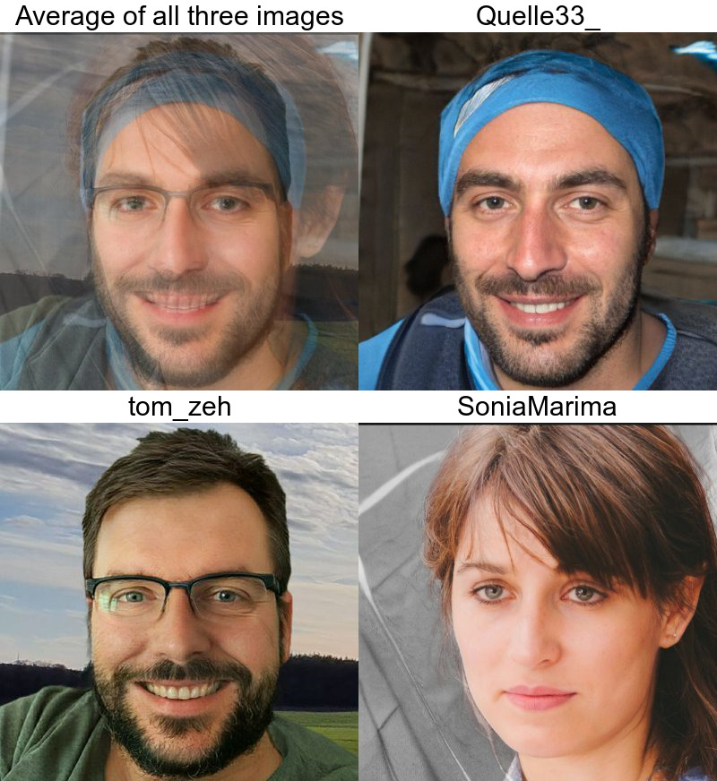
The tweet below has also been posted multiple times by both Quelle33_ and source_222, but apart from them Twitter's search returned only 3 other accounts which had posted the same tweet: [https://x.com/search?q=%22Does%F0%9F%92%89anyone%F0%9F%92%89have%F0%9F%92%89any%F0%9F%92%89idea%22&f=live]
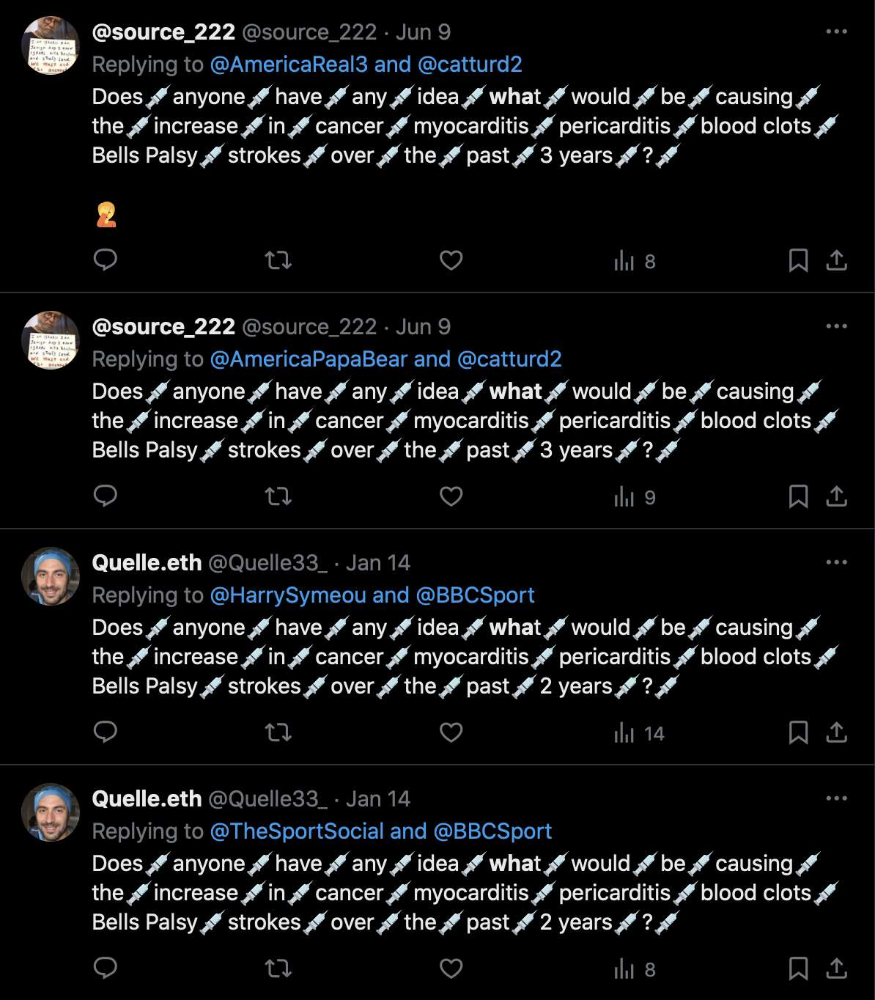
When I searched for a part of the text of the tweet below in double quotes, Twitter's search returned 30 tweets by source_222 and 19 tweets by Quelle33_ but no tweets by any other users: [https://x.com/search?q=%22I+still+can%27t+believe+the+government+convinced+you+id%C3%ADots+to+take+3+%22&f=live]
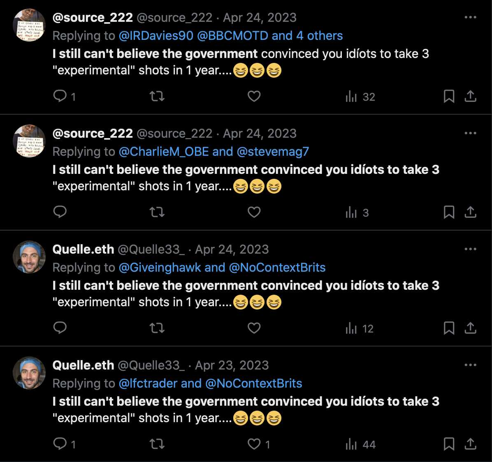
Quelle33_ and source_222 posted a large number of tweets in German up to May 2023, but after that they seem to have mostly stopped posting in German. [https://x.com/search?q=from%3Aquelle33_+lang%3Ade&f=live, https://x.com/search?q=from%3Asource_222+lang%3Ade&f=live]
In a snapshot of source_222's account at the Wayback Machine, the newest timeline tweets included 8 tweets about the Jordon Walker video by Project Veritas, a screenshot of an article by The People's Voice, a video about a 5G nanochip found under a microscope with 200-fold magnification, and a tweet that promoted the Died Suddenly film: [http://web.archive.org/web/20230126152849/https://twitter.com/source_222]
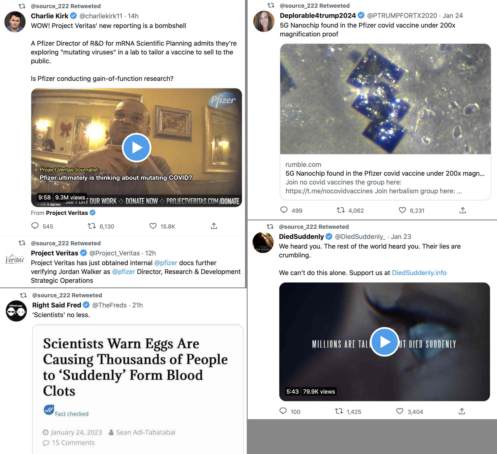
Most of the earliest tweets by source_222 promoted a Web3 project called MekaGorillaz: [https://x.com/search?q=from%3Asource_222+until%3A2022-5-1&f=live]
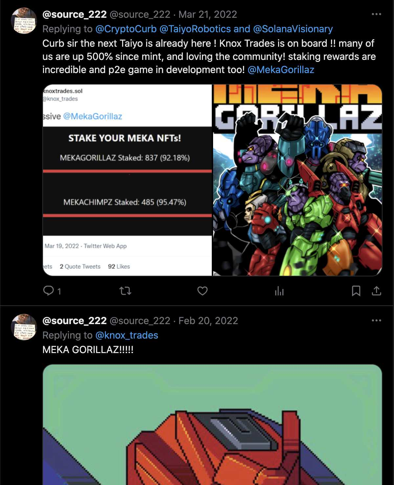